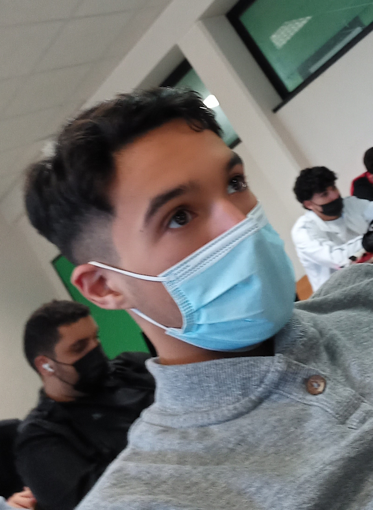

Présentation : |
 |
|
Je suis actuellement en première année de BTS SIO, j'ai décidé de choisir option SLAM. Cela me correspond plus car je souhaite devenir développeur ou programmeur.
La conception et la maintenance de programme applicatif m'attire plus que la conception et la maintenance d'infrastructure réseau.
l'informatique a commencé à me plaire lorsque j'ai commencé la matière : Numérique et Science de l'Informatique, en première et en terminale.
J'ai beaucoup aimé la liberté et l'apect pratique de la matière : projet, programmation... Mais j'ai surtout trouvé cette matière ludique.
La résolution d'un "bug" informatique était mes moments préférés. Cependant j'ai aussi des passions qui sont liées à l'informatique, ce sont les jeux vidéos et
les films. Je m'étais beaucoup posé la question : "comment est-ce que ça marche ?" |